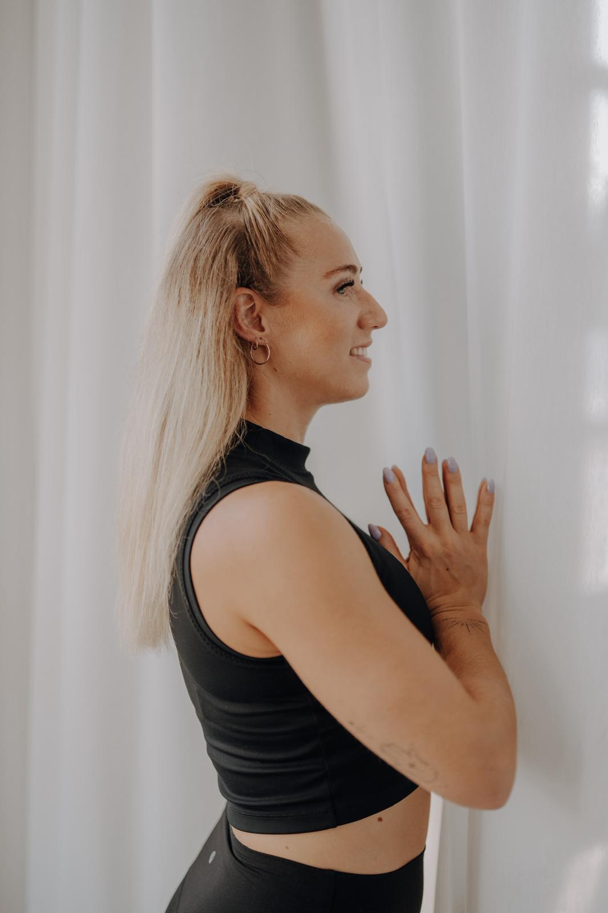
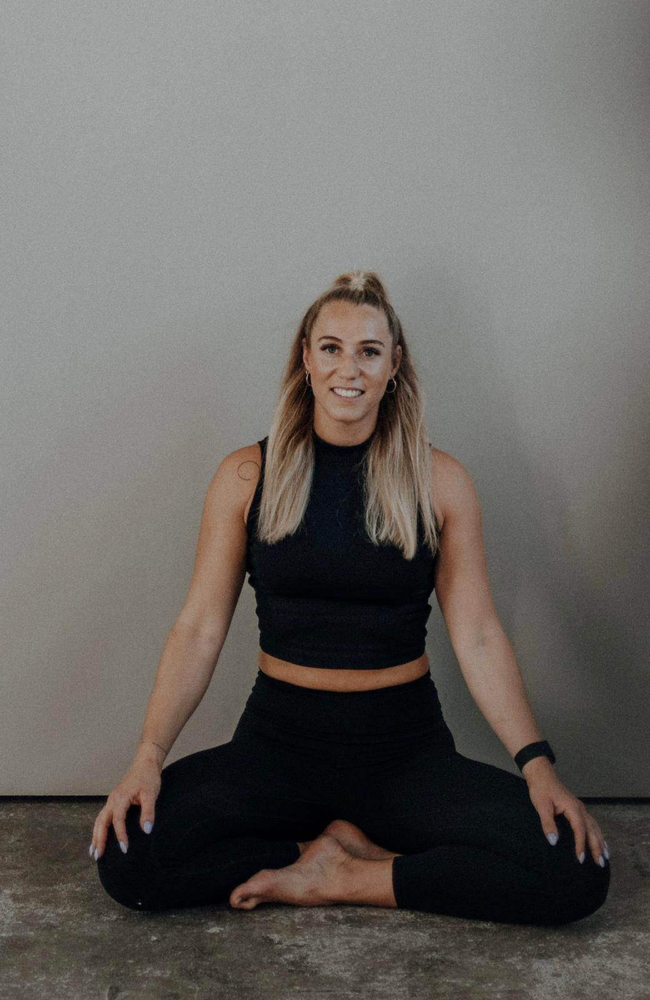
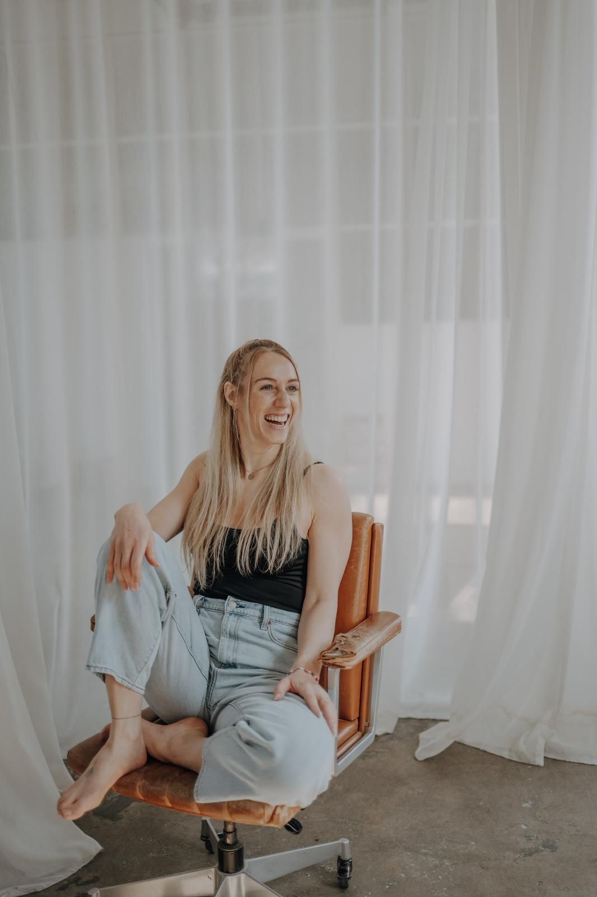
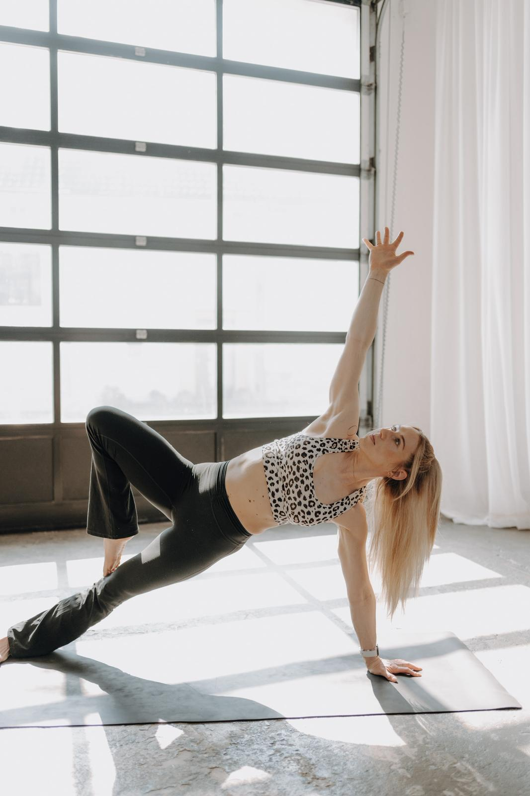
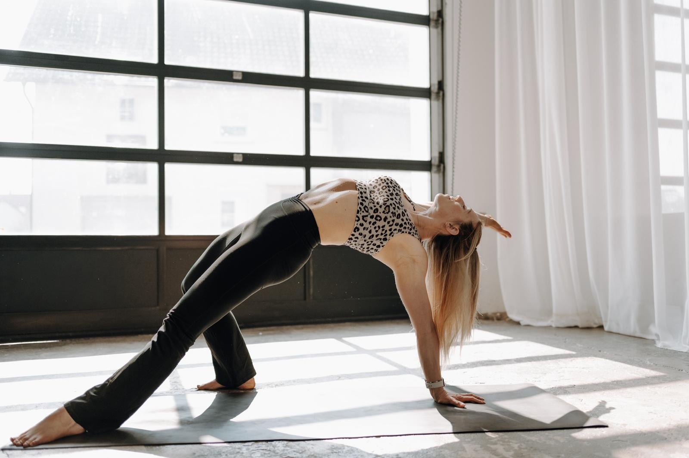
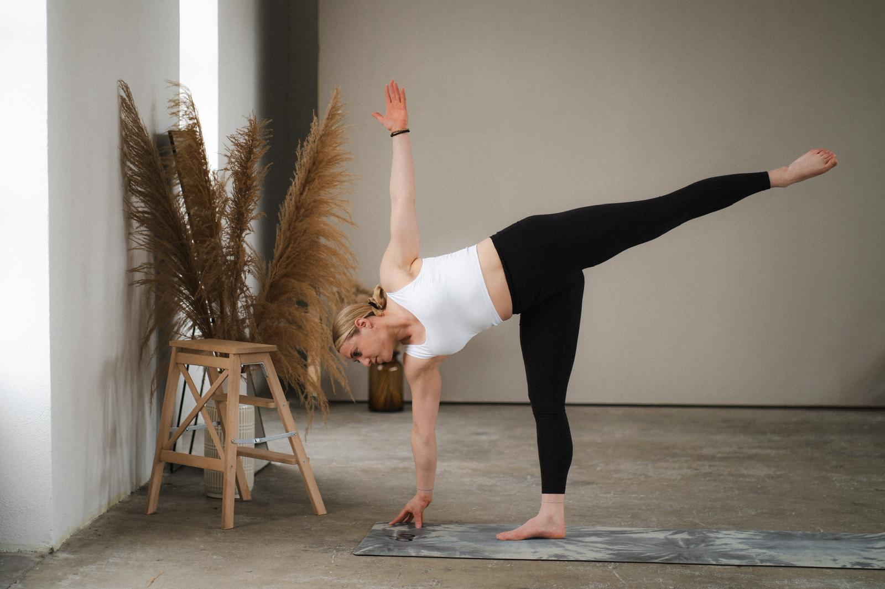
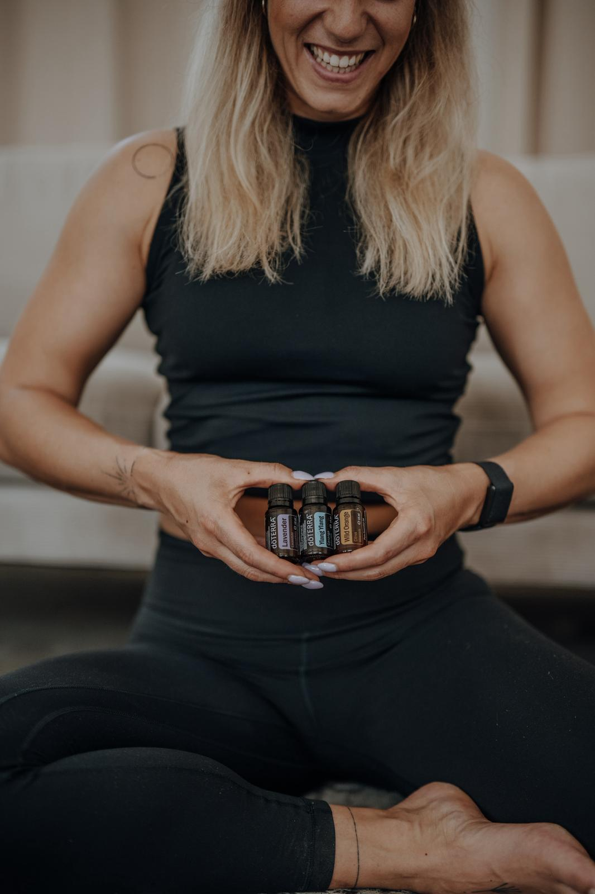

Feste Stunden, jede Woche
Somatic Yin Yoga
Haltungen, die drei bis fünf Minuten bleiben. Das geht ans Bindegewebe und ans Nervensystem, nicht an den Muskel. Du musst nichts können. Du merkst, was da ist, und bleibst.
Dafür mache ich das hier.
Wie ich dahin kamJahrelang hieß Fortschritt für mich: schneller, schwerer, mehr.
CrossFit, Wettkampf, eine Tafel mit Zahlen darauf. Ich war gut darin, mich zu pushen. Was ich nicht konnte: aufhören. Auch nicht, wenn mein Körper längst etwas anderes gesagt hätte.



Dann kam eine Stunde, in der ich nichts gemacht habe.
Fünf Minuten in einer Haltung, die nicht wehtut, aus der man aber trotzdem raus will. Ich bin geblieben.
Stillhalten ist die härtere Übung. Das merkst du spätestens in der dritten Minute.
Heute bin ich Mama, Yogalehrerin, immer noch CrossFitterin und Beraterin für ätherische Öle. Bei mir musst du kein Sanskrit können und nichts aussehen wie auf Instagram. Komm in Sachen, in denen du atmen kannst. Alles andere ist da.
Create the life you love.
Yoga ist mehr als nur ein Work-out.
Es ist dein Work-in.

Und irgendwann wird es hell.

Feste Stunden, jede Woche
Haltungen, die drei bis fünf Minuten bleiben. Das geht ans Bindegewebe und ans Nervensystem, nicht an den Muskel. Du musst nichts können. Du merkst, was da ist, und bleibst.

Ein paarmal im Jahr
Ein Nachmittag, ein Wochenende, sieben Nächte. Mal mit Keramik, mal mit Hypnose, mal mit einem Glas Wein. Und manchmal nur mit Stille und dem Allgäu vor der Tür.

Beratung und Begleitung
Ich arbeite mit dōTERRA. Schlaf, Fokus, Ruhe, Haut. Ich zeige dir, welches Öl wofür gut ist, und du probierst aus, ob es dir was bringt.
Sonntag
Rottenacker
Dienstag
Das Nest, Ehingen
Donnerstag
Das Nest, Ehingen
Kleine Gruppen, feste Plätze. Schreib mir kurz, bevor du das erste Mal kommst. Dann liegt eine Matte für dich bereit.
Zwei Stunden auf der Matte, zwei Stunden am Tisch. Erst Bewegung, dann Pinsel und Farbe. Danach meistens ein Glas Wein.
Yoga, bis der Kopf leise ist, danach Hypnose im Liegen. Die meisten schlafen zwischendurch kurz weg. Darf man.
Vom 24. bis 30. Dezember, sieben Nächte, jede mit einem eigenen Thema. Dazu Öle, jeden Tag ein Impuls per WhatsApp und ein gedruckter Guide.
Ein Wochenende raus. Yoga morgens und abends, dazwischen gutes Essen und Schlaf. Bisher im Allgäu und bei Sammolahari.
Termine gebe ich zuerst an die weiter, die mir Bescheid gesagt haben.
Ich arbeite seit Jahren mit dōTERRA. Drei davon benutze ich fast jeden Tag.
Wir schauen zusammen, was zu deinem Tag passt.
Erzähl mir kurz, wie deine Tage so laufen. Den Rest finden wir zusammen raus.
Wenn du magst, schreib mir einfach.
Zwei Sätze reichen. Ich antworte meistens am selben Abend.